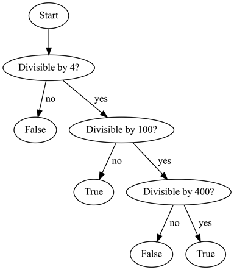

Prev - #19 Password Generator | Table of Contents | Next - #21 Validate Date
isLeapYear(2004) → True
It takes about 365.25 days for the earth to revolve around the sun. This slight offset would cause our 365-day calendar to become inaccurate over time. Therefore, leap years have an extra day, February 29th. A leap year occurs on all years divisible by four (e.g., 2016, 2020, 2024, and so on). However, the exception to this rule is that years divisible by one hundred (e.g., 2100, 2200, 2300, and so on) aren’t leap years. And the exception to this exception is that years divisible by four hundred (e.g., 2000, 2400, and so on) are leap years.
Exercise Description
Write a isLeapYear() function with an
integer year parameter. If year
is a leap year, the function returns True.
Otherwise, the function returns False.
These Python assert statements stop the
program if their condition is False. Copy them to
the bottom of your solution program. Your solution is correct if the following assert statements’ conditions are all True:
assert isLeapYear(1999) == False
assert isLeapYear(2000) == True
assert isLeapYear(2001) == False
assert isLeapYear(2004) == True
assert isLeapYear(2100) == False
assert isLeapYear(2400) == True
Try to write a solution based on the information in this description. If you still have trouble solving this exercise, read the Solution Design and Special Cases and Gotchas sections for additional hints.
Prerequisite concepts: modulo operator, elif
statements
Solution Design
Determining leap years involves checking if an integer is divisible
by 4, 100, and 400. Solving Exercise #3, “Odd & Even,” Exercise #5, “Fizz Buzz,”
and Exercise #6, “Ordinal Suffix,” all involved the %
modulo operator to determine the divisibility of integers. We’ll use year % 4, year % 100, and year % 400 in our solution.
It can also help to draw a flow chart of the general logic on a whiteboard or with paper and pen. It could look something like this:

Figure 20-1: A flow chart showing the logical steps of determining if a year is a leap year.
Leap year rules have a few exceptions, so this function needs a
set of if-elif-else statements. The order of these statements matters.
You could use an if statement to check if the year
is divisible by 4 and, if so, return True. But
before returning, you need another if statement to
check if the year is divisible by 100 and return False.
But before that, you need yet another if statement that
returns True if the year is divisible by 400. Writing
code this way ends up looking like this:
def isLeapYear(year):
if year % 4 == 0:
if year % 100 == 0:
if year % 400 == 0:
# Year is divisible by 400:
return True
else:
# Year is divisible by 100 but not by 400:
return False
else:
# Year is divisible by 4 but not by 100:
return True
else:
# Year is not divisible by 4:
return False
This code works correctly but is hard to follow. There are
several levels of indentation, and the nested if-else statements make it tricky to see which else statement is paired with which if
statement.
Instead, try switching around the order of the logic. For
example, if the year is divisible by 400, return True.
Or else, if the year is divisible by 100, return False.
Or else, if the year is divisible by 4, return True.
Or else, for all other years return False. Writing
code this way reduces the amount of nested if-else statements and produces more readable code.
Special Cases and Gotchas
Outside of the complex list of rules, there are no particular
gotchas for this exercise. The tricky part is to ensure that you have the
conditions for the if and elif
statements in the correct order.
Now try to write a solution based on the information in the previous sections. If you still have trouble solving this exercise, read the Solution Template section for additional hints.
Solution Template
Try to first write a solution from scratch. But if you have difficulty, you can use the following partial program as a starting place. Copy the following code from https://invpy.com/leapyear-template.py and paste it into your code editor. Replace the underscores with code to make a working program:
def isLeapYear(year):
# Years divisible by 400 are leap years:
if ____ % 400 == ____:
return ____
# Otherwise, years divisible by 100 are not leap years:
elif ____ % 100 == ____:
return ____
# Otherwise, years divisible by 4 are leap years:
elif ____ % 4 == ____:
return ____
# Otherwise, every other year is not a leap year:
else:
return ____
The complete solution for this exercise is given in Appendix A and https://invpy.com/leapyear.py. You can view each step of this program as it runs under a debugger at https://invpy.com/leapyear-debug/.
Prev - #19 Password Generator | Table of Contents | Next - #21 Validate Date